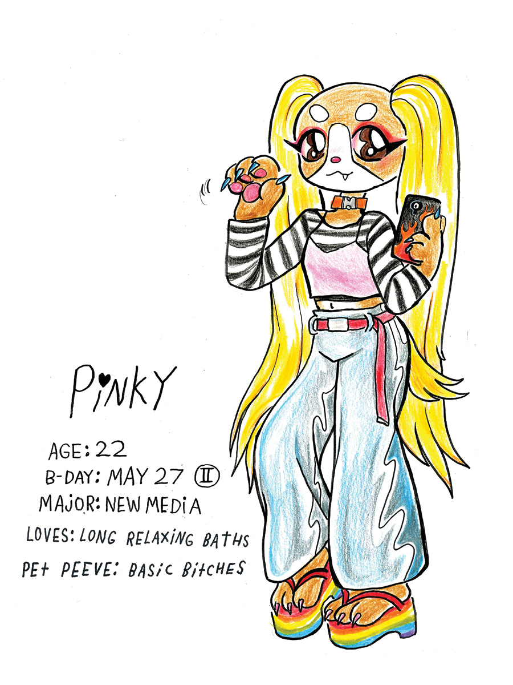
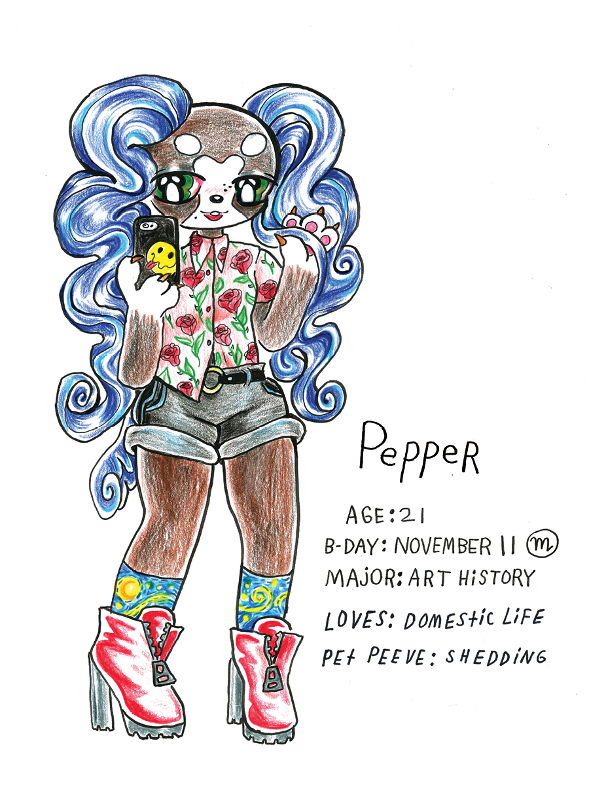
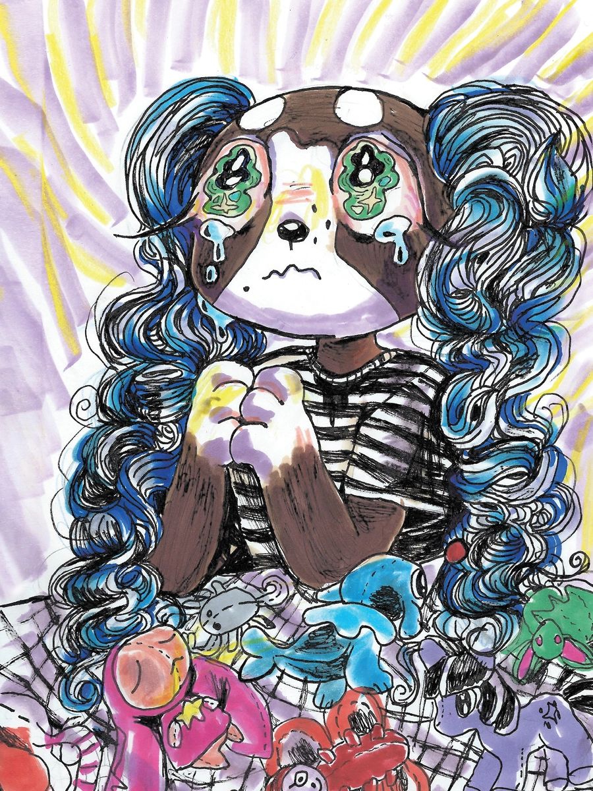

**Content warning: This comic is for adults, and it includes suicide, sexual themes, and violence as part of its story. Please be aware!**
Pinky & Pepper Forever
"After Pinky’s lethal performance art piece, her devoted girlfriend Pepper follows her into death, only to find that in Hell, Pinky is… thriving?!
Pinky & Pepper Forever is a dark comedy full of furry feelings and a little gay Catholic guilt.
Follow these two puppygirls’ relationship and artwork on Earth and their new life along the River Styx."

Pinky & Pepper Forever is a 2018 full-color comic by Eddy Atoms. It uses characters from the discontinued 2013-2014 doll line Pinkie Cooper and the Jet Set Pets, but it transforms them into something new and unique.
As the comic's description states, art students Pinky and Pepper are girlfriends in a complex relationship that brings out good and bad parts of them both. At art school, they encounter mockery from other students and miscommunicate with each other. Pinky commits suicide as one final art installation in an attempt to get her peers to take her seriously, and grief-stricken Pepper follows after seeing her in a dream. They both end up in a cartoonish, torture-filled portrayal of Hell and become grim reapers together. The comic is altogether funny, dark, and tongue-in-cheek, seamlessly blending lots of different emotions and anxieties.
At 64 pages, it's a quick read that has a profound emotional impact on me! The loose and colorful art style is gorgeous and inspirational, and it works perfectly with the tone of the story being told. I myself have complicated experiences with the "gay Catholic guilt" described by Atoms, as well as with mental health and suicide, but reading this comic is almost a relief to me. It takes its subjects seriously, but it also manages to find humor and strength in telling Pinky and Pepper's story. With the content warning in mind, it's a comic I would highly recommend.
Pinky & Pepper Forever is available to buy digitally and physically from Silver Sprocket and is also free to read. All of Eddy Atoms' comic work can be found here!